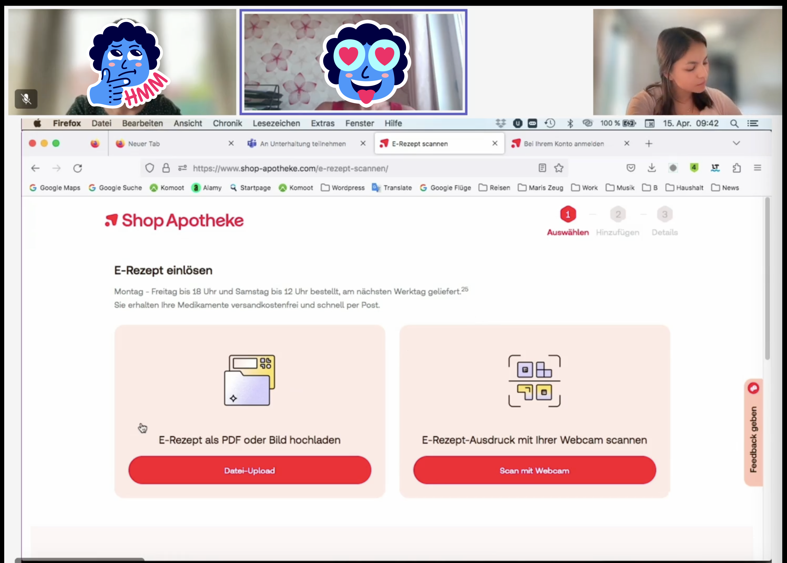
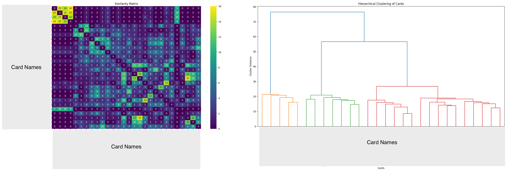

Challenge
- Since January 1, 2024, medical practices are required to issue e-prescriptions
- Customers and online pharmacies are facing unfamiliar situations, new behaviors and solutions must be learned, tested, and adapted
- While previously redeeming prescriptions at online pharmacies was done via postal mail, it is now possible to scan and upload print-outs or redeem directly frome your health insurance card
Goal
- Retain existing customers by helping them learn new redemption processes
- Attract new customers through new redemption process and its advantages
- Roll out solutions quickly, monitor and test them, and respond fast to market changes and customer feedback

Reedeming an e-prescription at Shop Apotheke

Receiving first-hand feedback in a moderated user test
Role / Responsibilities
Leading UX Researcher for e-prescription journey at Shop Apotheke
- Continuous user research and data analysis
- Competitor analysis
- Close collaboration with product team and stakeholders
Collaborators
E-prescription Product Team, Web Analytics, App Team, Marketing, Data Science
Approach
- Weekly PO & UX alignment on current roadmap and UX tasks for the upcoming week or sprint
- Setup, monitoring and adaptation of (UX) metric tracking
- Fast paced, iterative design-research loops
- Shorter customer feedback -> product cyles by introducing continuous discovery
- Bi-weekly research presentations in sprint reviews to ensure stakeholder engagement and fast decision making
Methods
- Interviews
- Moderated & Unmoderated Usability Tests
- Web Analytics
- A/B Testing
- Card Sorting
- Surveys


Exemplary Card Sorting Results
Exemplary Data Tracking with Contentsquare
Reflections & Learnings
- Tapping into a new market with no comparable experiences to look at, requires continuous testing, evaluating and redesigning.
- Despite the urge to get fast responses to rolled-out solutions, it is crucial to remain patient, giving users the chance to adapt to the new. Don't rush when interpreting data.
- Close alignments to other involved departments and within the own product team are crucial for successful fast-paced implementations along the entire customer journey